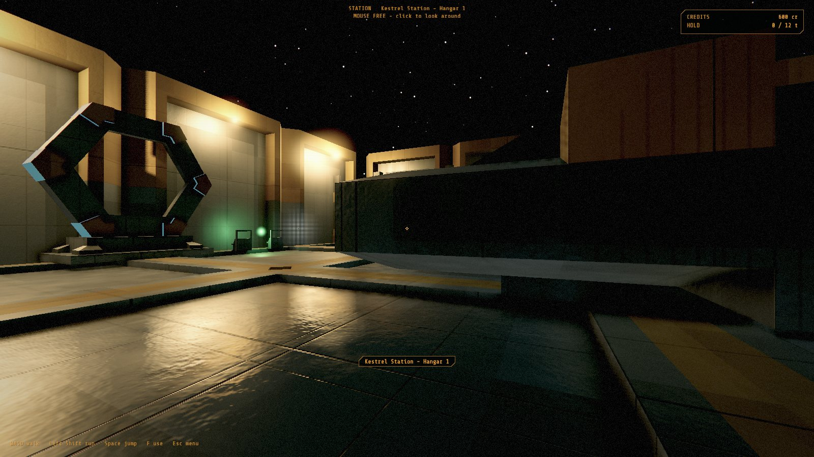
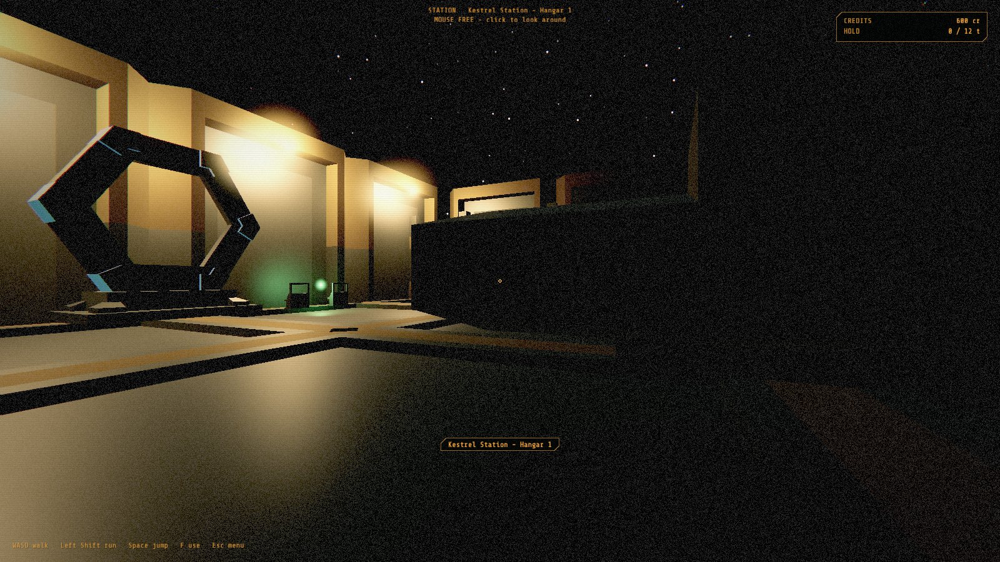

The flight log of a lonely used-future space game: fly a worn-out ship, walk its corridors, mine, trade and fight in a quiet corner of a star system.
Current build
0.12.0
Ship
Sparrow
Location
Cinder Reach
Log entries
13
LOG 17build 0.12.0
Leaving the helm
You can get up now. Press the key in open space, and the seat is behind you and the ship is braking by itself. Your ship used to be a single room you could only enter when it was parked. Now it has decks.
The Sparrow's cockpit opens onto a galley and a row of bunks. A stair goes down to the hold and the airlock, and aft of those is the engine room, where the core glows behind its rods. It's small, plain and a little worn, which is about right for a ship like this.
The best part is the windows. They aren't pictures. What you see through them is the actual planet, the actual station and the actual nebula, so when the ship turns, the sun slides across the wall. The ship doesn't wait for you either: pirates keep shooting at an empty helm, and hitting a rock throws you across the galley.
This is the piece co-op was waiting for. Next comes the hard part: one person flying while another walks to the engine room, on two computers over a network.
Those are the real planet and station, not a picture.The upper deck, and the stair down.The hold. That's the actual sun out there.
LOG 16build 0.11.0
Room for a crew
No new pictures this time, because nothing looks different. That was the goal. Underneath, the game has stopped assuming there is only ever one of you.
Until now there was one body, one wallet and one idea of where "you" are. Now the ship can carry up to four people, and each has their own health, guns, ammunition and money. They do not have to stay together. One can sit at the helm while another walks the ship and a third creeps through a derelict's cargo bay. Every place with someone in it runs on its own: two people in the same bay fight the same crawlers, and a bay nobody is in stays asleep. Whatever was killed there stays dead.
There are a few ship's rules. The first to sit down flies; the rest ride along. Nobody undocks or lifts off until everyone is in a seat. Money is personal and the hold is shared: what you buy comes out of your own pocket, but it goes in the one cargo hold. Anyone who leaves keeps their money for when they come back.
There is no network yet, so who tests it? Pretend crew members, driven by code, that walk to random spots and shoot at whatever they find. Four of them roam a derelict for forty seconds, twice, and both runs have to end exactly the same, down to the millimetre. When real friends join over a network later, that kind of repeatability is what keeps everyone's game in step.
LOG 15build 0.10.0
More guns, more things in the dark
One rivet driver against one kind of crawler was a start. Now there are tool caches to find. One holds a flechette caster, a breaching tool that throws a fan of steel darts and kicks like a door slamming. The other holds an arc cutter, a hull cutter with a short, crackling beam that burns for as long as you hold the trigger and drains its cell while it does. Keys one to three switch between them, and each gun has its own ammunition to scavenge.
Two new things live out there too. The spitter stands tall on thin legs and keeps its distance. It rears up and lobs a glowing glob in a slow arc. You can see it coming and step aside, and if you rush it, it backs away. The brute is slow and armoured until it lowers its head and charges. If it catches you, you go flying. If it misses, it stands dazed for a moment, and that is when your shots count double.
The bigger change is one you cannot see. Until now enemies walked straight at you and slid along any wall in the way. Now every map works out where things can walk the first time you enter it: floors, stairs, ramps, catwalks, even which gaps are too low for a brute. Enemies plan a route round the crates and through the door. They also hear you running.
Loot comes from tables now. Salvage, ammunition, medical kits and caches are each decided once per spot, so reloading a save cannot reroll them. Sometimes the dead drop something too. There is a small test range, built from a script, to try all of it in one go.
A spitter's glob, a moment before it lands. Step aside and it misses.The brute, just after its charge connected.The arc cutter burns for as long as you hold it.Three caches taken, three guns on the HUD.
LOG 14build 0.9.0
Something is still moving back there
The log on the Ash Wren warned about it, and now it is true. Walk into the cargo bay and a cluster of small red lights opens up in the dark. Then it starts to move.
You are not a soldier, so you have a rivet driver: a hull fitter's tool with twelve rivets in the magazine, a slam you can feel, and a long, nervous reload. The crawlers are low, plated things that sleep until they see or hear you. A shot wakes everything nearby, so the first one you fire starts the whole fight. When one rears up to lunge you have a moment to step back. There is a weak lamp on your suit, because you need to see what those eyes belong to.
What you kill stays dead, and what you take stays taken. Salvage pays, a medical kit patches you up, and if it all goes wrong your suit drags you back to the airlock. Under the hood it already works with a list of players rather than just one, ready for the day a friend comes along.
A confession as well. Lights were popping on as you walked, so the game was changed to use twice as many at once. It did not quite work: the part that shades each pixel was still only counting to eight, and nothing complained. The bug turned up in the screenshots for this entry. All sixteen shine now, and a test watches for it.
They were asleep until you walked in.A fitter's tool, never meant for this.What you kill stays dead.
LOG 13build 0.8.2
Nobody answers
The derelict is out there now. The Ash Wren drifts in a violet nebula, about 42 kilometres from Kestrel Station. You pick it out on your navigation, ride the drive across, and hail it. Nobody answers. So you set down on its hull, walk through your own airlock, and you are inside.
There is nothing to fight yet, only a dark corridor, a cargo bay open to the stars and a couple of logs someone left behind. But this is the first time the game has had a place you go to just to see what happened there.
Light got more honest too. A glowing screen used to look bright without lighting anything around it. Now the console's green falls on the wall and the floor beside it, as you would expect.
Clamped to the hull of the Ash Wren.Arriving. The speck in the brackets is the wreck.Inside, with the console's green light on the wall.
LOG 12build 0.8.1
Polished steel
The first question after trying the Blender workshop was a simple one: how do I make a mirror? The honest answer was that you could not, quite. Shiny surfaces only reflected a small, blurry view around the player.
Now you can place a Reflection Probe in a room, stretch its box to fit, and anything shiny inside reflects that room properly. It lines up with the walls, so reflections sit about where they should. It is not a true mirror yet, and the player's own reflection is still missing, but a polished panel in a dark corridor now looks the part.
Facing the polished panel in the middle of this view. The plates and the lamp in it are reflections of the far side of the corridor.
LOG 11build 0.8.0
A workshop in Blender
Places in FARHORIZON can now be built in Blender, the free 3D tool. A new add-on turns it into the game's own editor. You model and texture as usual, drop in lights, and place things like player starts, data logs, exits and enemy spawns, each with its own little icon. Then one button drops you straight into the game, standing inside what you just made.
To prove it works, we built a small derelict through the add-on. A worn corridor with riveted plates and hazard stripes opens into a cargo bay, where stairs climb to a catwalk and a torn hole in the hull looks out onto the stars. It is only a test map, and nothing lives there yet. But it is the first thing in the game that feels like a place you could get lost in.
Ships go through the same workshop, so a new hull can be flying within a minute of the last edit.
Inside the sample derelict, in the game. Everything here was built in Blender.The same derelict in Blender. Icons mark where things go.The hole in the cargo bay, looking out at the nebula.
LOG 10build 0.7.3
Into the tunnel
The first flights with the new effects showed what was missing. The exhaust had visible gaps, the engine glow was a perfect circle, and nothing told you how fast you were going.
The exhaust is now one continuous stream of churning gas with soft, billowing edges. The glow breathes and flickers, each engine in its own rhythm. Fine dust hangs in space around the ship and streaks past as you pick up speed, so you can finally feel your velocity.
The big one is the hyperdrive. Engage it and a tunnel of light opens around the ship, twisting slowly as streaks of every width rush past, with your destination waiting at the far end.
In transit to Gale Ridge, with Varga waiting at the end of the tunnel.The exhaust is one continuous stream now.Under boost, with dust streaking past.
LOG 09build 0.7.2
Colour in the dark, and a handbrake
Space was a bit too empty, so we tried a little colour. Faint violet, teal and rust nebulae now drift across the distant sky. Three real gas clouds also sit out there in the world, close enough to fly into. One wraps around the Cinder Drift asteroid field. This is still a test to see how it feels, so the colours may well change.
The engines finally leave something behind. Exhaust now trails off the ship, swelling with the throttle and turning magenta under boost. The hyperdrive got its own moment too: sparks gather while it charges, and there is a flash as it engages.
The smallest change might be the most useful. Press X and the ship brakes to a dead stop and holds there, even with flight assist off, until you touch the controls again.
The drive charging. Sparks gather at the nozzles.Boosting away from Kestrel. The trail turns magenta, and the sky has some colour now.The Cinder Drift. Varga looks red here because you are seeing it through the gas.
LOG 08build 0.7.1
Turning the lights on
Seeing the game on a proper graphics card for the first time was humbling. There were no shadows, every wall was one flat colour, and a thick layer of film grain sat over everything.
So the world got real light. The sun casts shadows now. Lamps cast them too, so light finally stops at walls. Corners darken where surfaces meet, and floors pick up reflections of the room around them. The models have no textures yet, so the game paints on some grime and panel lines of its own. That gives the ship a used, lived-in look until the real art arrives.


BEFOREAFTER
Gale Ridge at dusk, with long shadows at last.The Sparrow's corridor. Grime and panel lines stand in for textures for now.
LOG 07build 0.7.0
A proper front door
Until now the game simply dropped you into space. It now has a title screen with the world slowly turning behind it, a pause menu, save slots and a full options screen where you can rebind your keys.
The flight display was rebuilt with a real typeface and tidy panels, and its hints always name the keys you actually chose. The station terminal was redone as well. Clicking a row now only selects it, because nobody should lose a week's earnings to a stray click.
It was also the first version built and run on a real gaming PC, after six stages of development on a cloud machine with no graphics card at all.
The title screen. The wide amber letters come from the game's own font.The Kestrel Station Exchange, restyled.
LOG 06build 0.6.0
Rust Jackals
The system stopped being safe. Rust Jackal raiders now patrol the far side of the Cinder Drift, and they fly by the same rules as you do. They chase, attack, dodge, and run when it goes badly. Ossa Freight haulers trundle along their routes and flee if you shoot at them.
You have pulse lasers that overheat and rockets that hunt. Lose a fight and your insurer tows you home. Your cargo is gone, and you pay the deductible. There is also honest work now: delivery jobs, supply runs and bounties, plus a shipyard to spend the money in.
Overheated, in the middle of a fight, among rocks.The job board, on the old terminal.
LOG 05build 0.5.0
Somewhere to go
The world got much bigger. A travel drive carries you across thousands of kilometres, and the planet Varga and its moon Ossa hang in the sky. You can descend through the atmosphere in a wash of heat and land at Gale Ridge, a small outpost on a dusty cliff-ringed plain.
That gave the game its first trade route: rations out to the outpost, cheap nickel back to the station.
Coming down through Varga's atmosphere.Varga fills the view.
LOG 04build 0.4.0
Making a living
You can now point a laser at a rock, scoop up what breaks off and sell it. Prices sag when you flood a market, so hauling one load is fine and hauling ten is not.
This is also where the mood arrived. The neon purple from before gave way to the darker, colder look the game has kept ever since: failing lamps, fog in the corridors, amber readouts and quiet hull groans. The game could finally be saved, too.
The first honest day's work.The Used Future look arrives.
LOG 03build 0.3.0
Getting out of the chair
The game became more than a ship on a string. You can land on Kestrel Station's roof pad, leave the pilot's seat, walk down the Sparrow's corridor, cycle the airlock and step out into a hangar with your own ship parked behind you.
It looks wildly different here. Those purple walls were a phase.
Kestrel Hangar 1, in its purple period.Docked on the roof pad.
LOG 02build 0.2.0
Learning to fly
The ship stopped being a model to look at. It got a flight model with real weight, and you can turn off the flight assist and drift sideways if you are brave. It also got its first asteroid field and a small station to fly around, plus the first retro 80s look.
Approaching the station, with the look turned all the way up to the 80s.
LOG 01build 0.1.0
First light
Every game starts with something on the screen. For FARHORIZON that was one small ship and nine thousand stars, drawn by an engine written from scratch. You could only orbit around it and look. It was enough.
From the first build.
Next on the flight plan
Something in the dark. First-person weapons, the first enemy and loot worth taking.
Bring friends. Co-op for up to four players, sharing one ship or flying their own, with walkable decks and a crew at the stations.
Land anywhere. Whole planets to fly down to and explore.